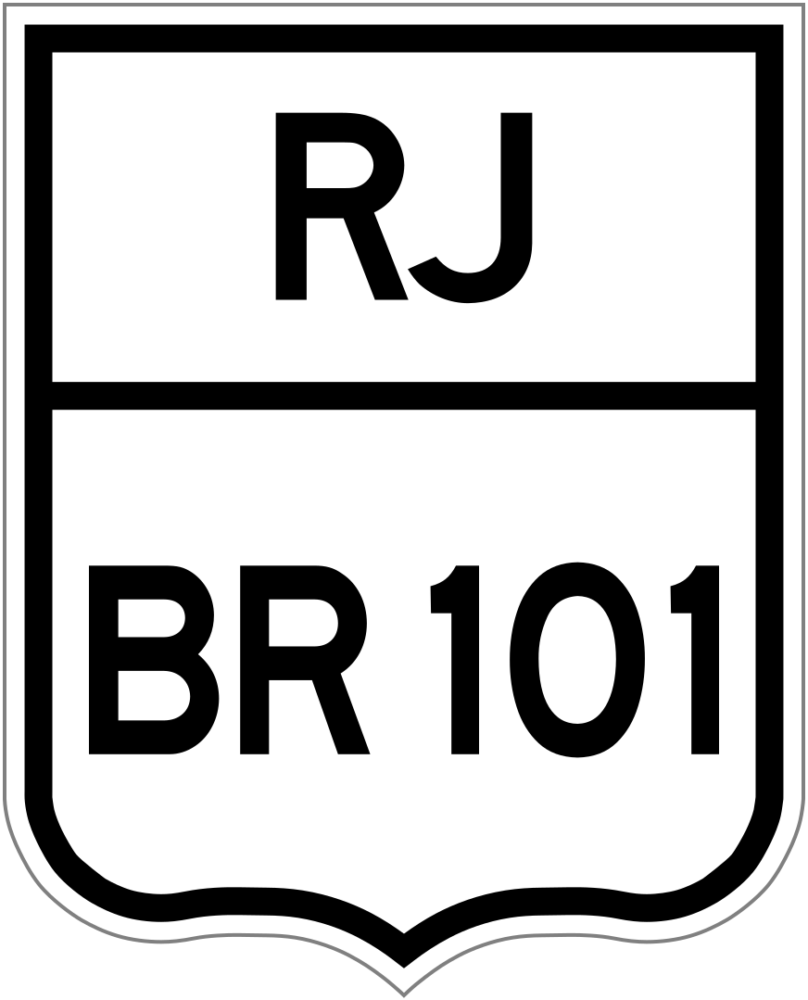
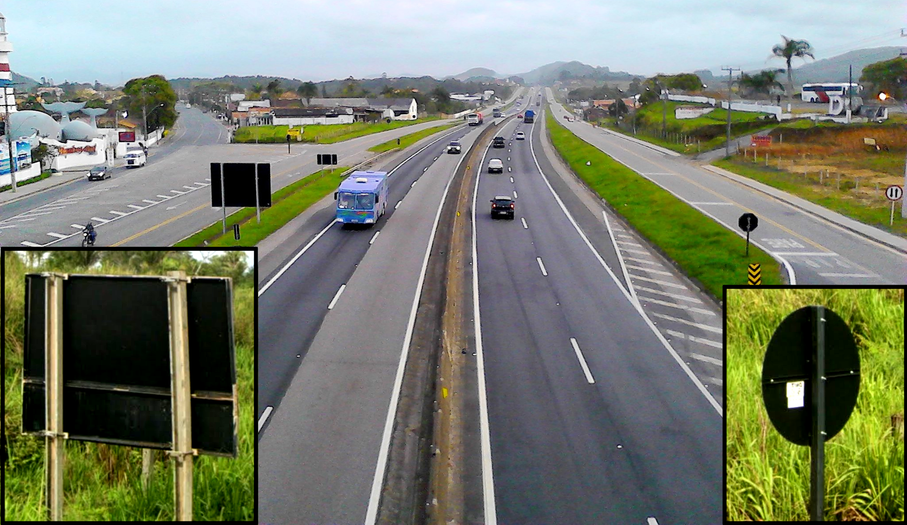
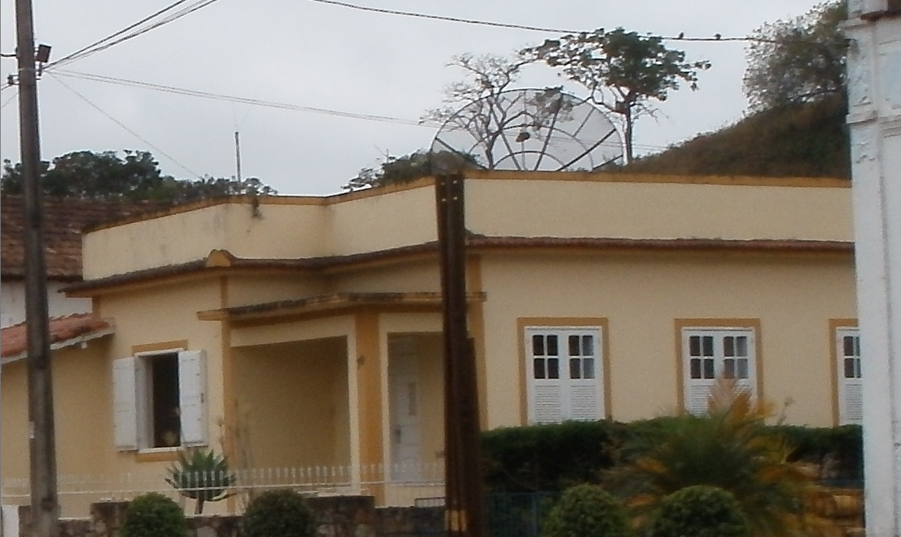
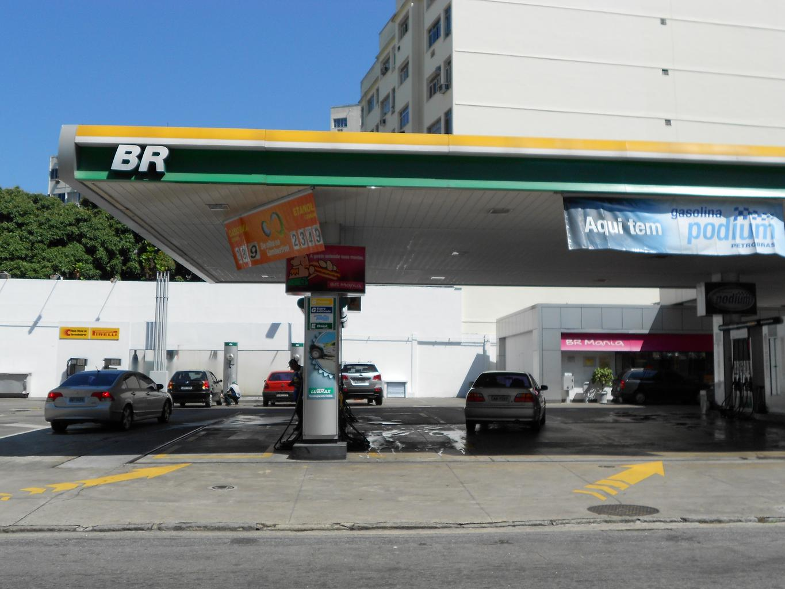
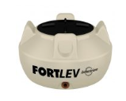
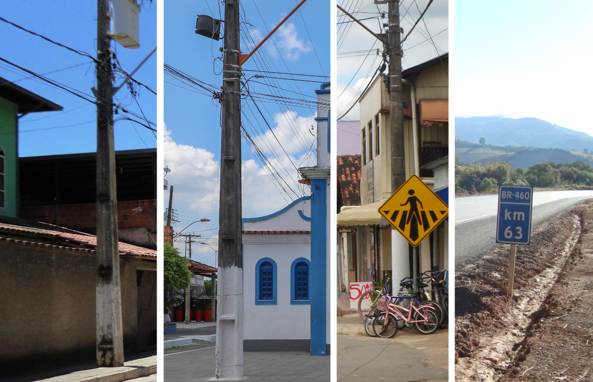
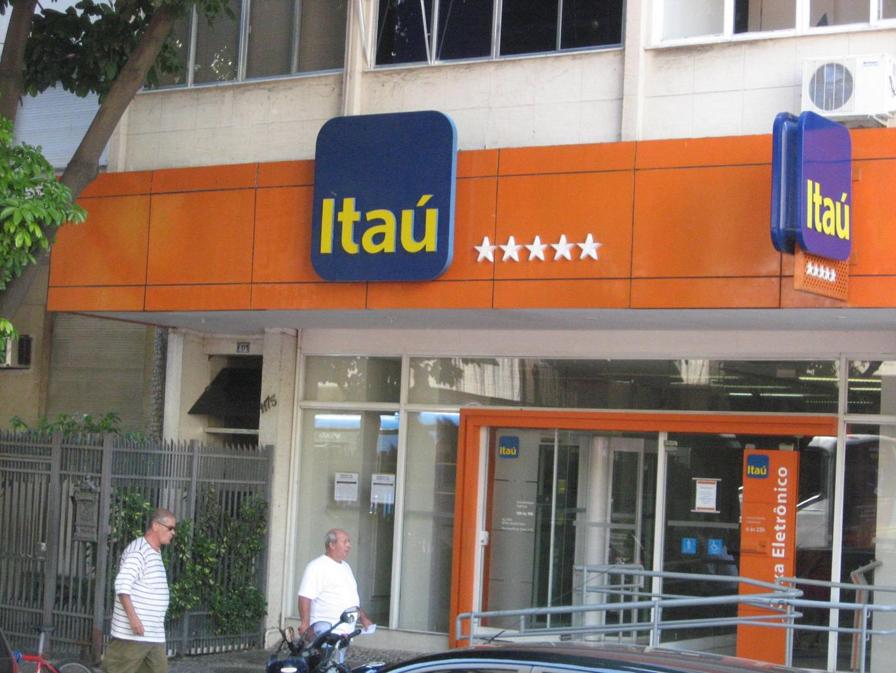
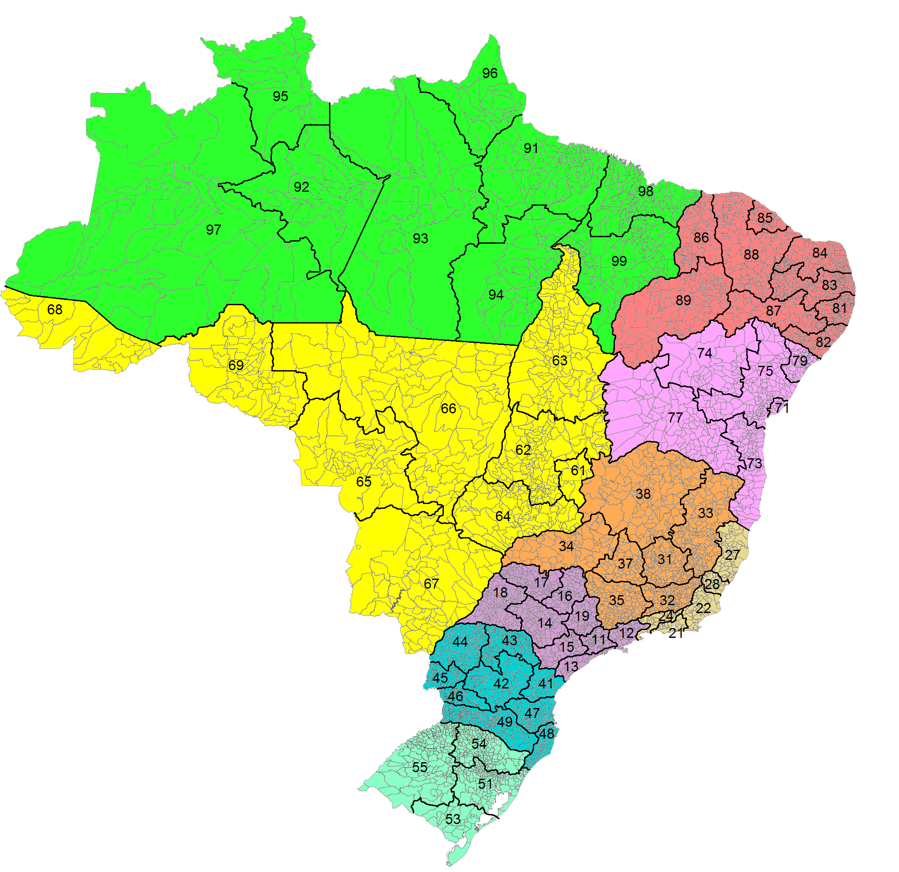
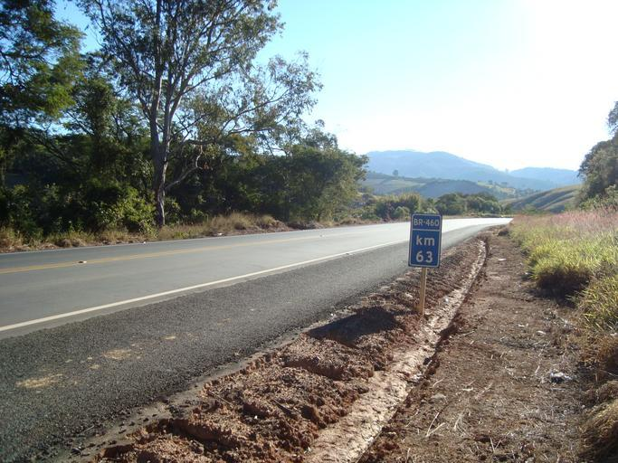
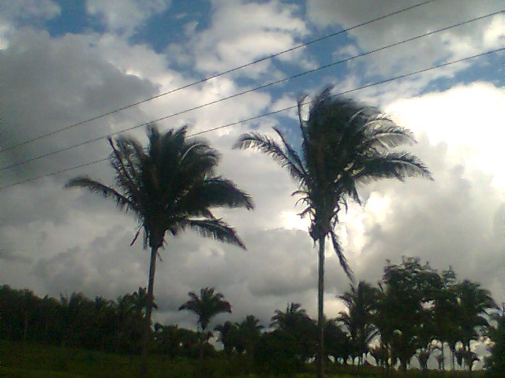

国・地域の見分け方
- ドメインは.br
- 言語はポルトガル語であり「Ã・ã」の文字が特徴的
- 標識の裏側が黒いものが多い
- 家のアンテナが特徴的で透明なパラボラアンテナが多い
- ナンバープレートの上側が青色の時がある(by Geotips )
- トラック・バス・タクシーの車両のナンバープレートが赤色
- 電柱の溝に仕切りがある電柱を使っている
見つかる標識

代表的な企業
言語はポルトガル語であり「Ã・ã」の文字が特徴的


トラック・バス・タクシーの車両のナンバープレートが赤かったり文字が赤かったりする。


By Olympiobr - Own work, CC BY-SA 3.0, Wikimedia Commons
南米石油最大手ペトロブラスのロゴがある(参考文献 Petrobras)。

Fortlevと書かれたタンクがある(参考文献 Soluções Fortlev Caixa d’Água Pequenos Volumes)。色はいくつか種類があるが形が特徴的。屋根の上に乗っているのがわかる。



黒背景に黄色のシェブロンが見つかる。
_(8102621957).jpg#/media/File:Santa_Catarina_-_SC-303_(ponto_cr%C3%ADtico)_(8102621957).jpg)
南米最大規模の銀行、Banco Itaúのオレンジ色の看板がたくさんある。ガソリンスタンドに南米石油最大手ペトロブラス（緑色のロゴ）のものが多い。

{{< amazoncard url=“https://amzn.to/4rNcoog” title=“食文化からブラジルを知るための55章 (エリア・スタディーズ)” price=“¥2,200” tagline=“世界の中で最も劇的に多人種・多民族的な国となったブラジルは自然環境や生物群系も多様で、世界に類を見ないほど多様な食文化がある。シュラスコやフェイジョアーダといった代表的な料理だけでなく、基層の食文化と移民の食文化、ブラジルの食習慣や酒場文化までを網羅した究極の入門書！”
}}
州・地域の絞り込み
- 市外局番のエリアコードで範囲を絞ることができる
- 「BR XX」と道路番号が書かれた看板が道端に立っている
- Florianópolisを中心にアゾレス諸島からの移民の影響を受けたヨーロッパ風の建築が見られる
1がサンパウロ、2がリオデジャネイロ。基本的に東から西へと数字が大きくなる。

By Magno Brasil - Own work, CC BY-SA 4.0, Wikimedia Commons(Link)
いきなり道路番号を探すのはかなり難しいので周りの雰囲気から地域を絞り込んだ上で探してみる。

建設時にアゾレス諸島出身のポルトガル人が多く入植した影響でヨーロッパ系移民を先祖に持つ市民が多くを占めている(参考文献 フロリアノーポリス)。ドイツ系とイタリア系の移民が多く、建築もヨーロッパ風のものが多い。

By dnsilva1, CC BY-SA 3.0, Link
植生
- 地域ごとに植生と土の色が異なる
- Amazônia：湿度の高い赤道気候でアマゾンの森林が存在する
- Cerrado：畑が多い地域も木がたくさんある地域もあり判別が難しい
- Mata Atlântica：ブラジルの大西洋の海岸線15州以上に広がって分布する森林
- Caatinga：乾燥した土壌であり白っぽい土壌が含まれることが多い
- Pampa：ウルグアイに近い雰囲気で農牧地がある
- Pantanal：パラグアイ北部の河川による沖積平野だが道がほとんど無い

地域ごとに植物も異なる。海から吹く湿った風の影響を受ける。他の地域とは森の見た目が異なる。ヤシや松のようなものが見える時がある気がする。(参考文献 ブラジル大西洋岸森林（マタ・アトランティカ）の生態及び保全)。
特徴的な植物
- 特定の地域や州が分かる木
- パラナ松：パラナ松(参考文献 Araucaria angustifolia)はパラナ州周辺(by neckoluv )
- ブラジルロウヤシ：セアラー州を中心とした北東部
- ババスの木：ピアウイ州とマラニョン州(from 『【Geo Cup】日本最強による大会フル解説！！【翻訳】【Geoguessr】』)、それ以外でも南側全域で見られる

この木はパラナ州周辺(by neckoluv )


ピアウイ州とマラニョン州(from 『【Geo Cup】日本最強による大会フル解説！！【翻訳】【Geoguessr】』)に多く、それ以外でも南側全域で見られる

By Photo by David J. Stang - source: David Stang. First published at ZipcodeZoo.com, CC BY-SA 4.0, Link
Syagrus coronataはペルナンブコ州の南部からバイーア州に分布する、ブラジル東部で見ることができる木。バイーアが多いかも。
.jpg#/media/File:Euterpe_precatoria_(19866677541).jpg)
By Dick Culbert from Gibsons, B.C., Canada - Euterpe precatoria, CC BY 2.0, Link
アサイゼイロ(açaizeiro)はパラ―州に多い(by youtubeのコメント欄 市民ジョンさん)。特にアマゾン川流域やマラジョー島の周りに多いらしい(参考文献 アサイーボウル専門店 EMPORIO EXPRESS代官山)。

By Poyt448 Peter Woodard - Own work, CC BY-SA 3.0, Link
サンパウロ～リオグランデ・ド・スル州の沿岸付近の地域を中心にまばらに分布している(参考文献 iNaturalist - Eucalyptus grandis)。
画像出典
- 左から二番目の電柱画像のみ以下の画像から抜粋しています
- By Paul R. Burley - Own work, CC BY-SA 4.0, Link
代表的な企業の説明
| 企業名 | コード | 説明 | 決算 | 配当履歴 |
|---|---|---|---|---|
| Petroleo Brasileiro | NASDAQ | 南半球最大の石油採掘会社。 | Dividend History | |
| Vale | NASDAQ | 鉄鉱石3大メジャーの一角。ボーキサイト、銅、金なども生産している。 | Dividend History | |
| Itaú Unibanco Holding | NASDAQ | ラテンアメリカ最大の銀行(参考文献 S&P Global Market Intelligenceレポートの世界最大手銀行100行)。毎月配当を出す珍しい（通常は四半期に一度、南アフリカなどは半期に一度が通例）企業。 | Dividend History |